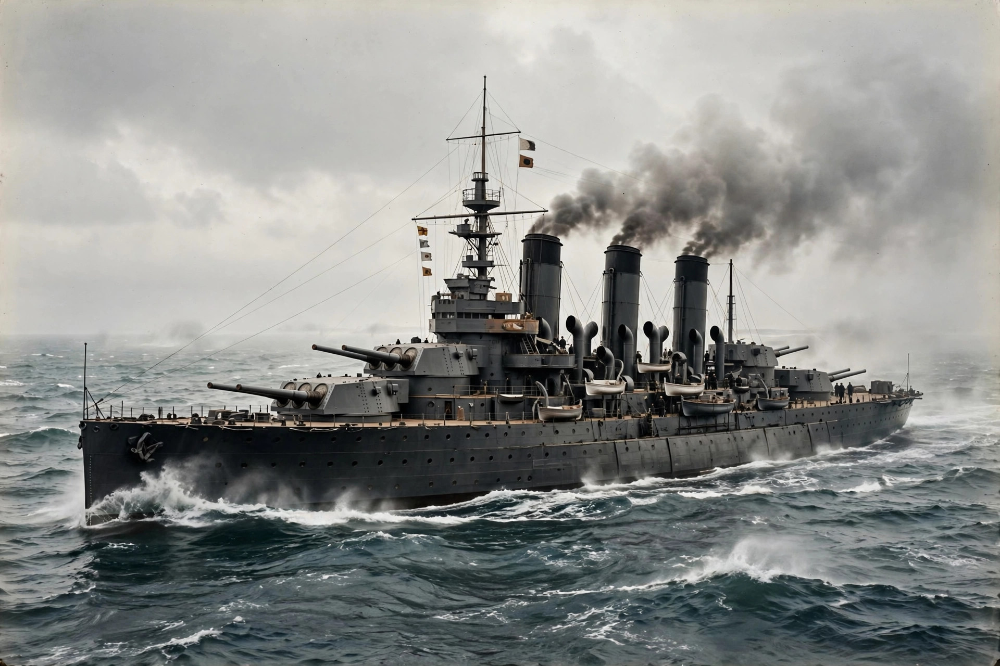

From Wikipedia, the free encyclopedia

An arms race occurs when two or more groups compete to accumulate superior military capability — more or better weapons, larger forces, or advanced technology — each reacting to the other's gains. The term originally described the Anglo-German naval race before the First World War, in which the launch of HMS Dreadnought in 1906 reset battleship competition and both powers raced to out-build the other.
The mathematician Lewis Fry Richardson modelled arms races with coupled differential equations, showing how mutual fear, grievance, and military fatigue determine whether rival build-ups stabilise or spiral into war. Modern accounts add domestic drivers: bureaucracies and defence industries with vested interests, worst-case planning, and action–reaction cycles in which each side reads the other's defensive measures as offensive threats — the security dilemma at work.
Beyond the dreadnought race, classic cases include the nuclear arms race between the United States and the Soviet Union, which peaked at tens of thousands of warheads before arms-control agreements (SALT, INF, START) capped and then reduced arsenals; the interwar naval competition regulated by the Washington Naval Treaty of 1922; and regional races such as that between India and Pakistan. An evolutionary arms race, by analogy, describes co-evolving adaptations between predators and prey or hosts and parasites.
Arms races can deter war by preserving a balance, or provoke it through windows of opportunity and preemptive incentives. They divert resources from civilian needs — the "guns versus butter" trade-off — though scholars debate the scale of economic harm. Arms control, verification regimes, and confidence-building measures are the principal policy tools developed to dampen them.